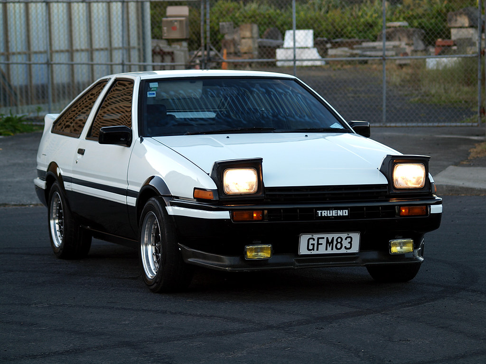
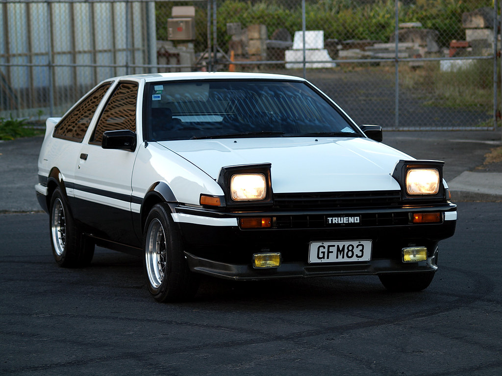

Toyota AE86
Some AE86 videos
 

The AE86 series of the Toyota Corolla Levin and Toyota Sprinter Trueno are small, front-engine/rear-wheel-drive models within the front-engine/front-wheel-drive fifth generation Corolla (E80) range—marketed by Toyota from 1983 to 1987 in coupé and liftback configurations. Lending themselves to racing, the cars were light, affordable, easily modifiable and combined a five-speed manual transmission, optional limited slip differential, MacPherson strut front suspension, high revving (7800 rpm), twin-cam engine with oil cooler (e.g., in the US), near 50/50 front/rear weight balance, and importantly, a front-engine/rear-drive layout—at a time when this configuration was waning industry-wide. Widely popular for Showroom Stock, Group A, and Group N, Rally and Club racing, the cars' inherent qualities also earned the AE86 an early and enduring international prominence in the motorsport discipline of drifting. The AE86 was featured centrally in the popular, long-running Japanese manga and anime series titled Initial D (1995–2013)—as the main character's drift and tofu delivery car. In 2015, Road and Track called the AE86 "a cult icon, inextricably interwoven with the earliest days of drifting."[12] The AE86 would go on to inspire the Toyota 86 (2012–present),[13] a 2+2 sports car jointly developed by Toyota and Subaru, manufactured by Subaru—and marketed also as the Toyota GT86, Toyota FT86, Scion FR-S and Subaru BRZ. In November 2021, Toyota temporarily restarted the production of a limited number of parts for the AE86, with dealers beginning to take orders for new steering knuckle arms and rear brake calipers. Rear axle half shafts have also been scheduled for new production. Toyota has also announced that this reboot is temporary, and parts will only be available as long as stocks last.[14][15]
AE86 Models
While in production, the AE86 was a popular choice for showroom stock, Group A, and Group N racing, especially in rallying and circuit races. After production ended, many private teams continued to race the AE86, and it remains a popular choice for rallying and club races today. Part of the continued appeal of the AE86 for motorsports is its rear-drive configuration, not available in most newer lightweight coupes. In Group A touring car races, the car either dominated the lower category where eligible or fought it out with Honda Civics or the later AE92s and AE101s whilst maintaining its competitiveness. In Ireland, where rallying is considered one of the most popular forms of motorsport, as organizing regulations are more relaxed compared to that of other countries, the AE86 was popular when new, and remains so popular that teams will purchase cars from the UK due to local shortages. The AE86 is also popular for rally use in Finland, where the cars can strongbe competitive in the F-Cup competition for naturally aspirated 2WD cars.[citation needed] The AE86 was entered in the European Touring Car Championship from 1984 to 1988 with a 150 hp (112 kW) 4A-GEU engine.[citation needed] In 1986 it beat the BMW M6, BMW 325i (E30), Rover Vitesse, Volvo 240 Turbo, Merkur XR4Ti, Mazda 929, Holden Commodore (VK), Alfa Romeo 75 (turbo V6), and Mercedes 190E 2.3-16 to win the Manufacturers Championship with 267 points, surpassing the 1986 Drivers Championship Schnitzer Motorsport BMW M6.[24] In 1986 and 1987 Chris Hodgetts won the British Touring Car Championship (BTCC), beating the V8 Rover SD1's, Ford Sierra Cosworth's and BMW 3 Series (E30) M3's two years running for an overall points victory driving an AE86 for Toyota (GB) PLC and his own race prep team CHMS.[25] The semi-factory supported Kraft team entered a spaceframe Trueno in the JGTC for the GT300 regulations in 1999. The Trueno used a Dallara F3 chassis and was powered with a 3S-GTE engine that came from a SW20 MR2 Turbo that produces about 300 hp (224 kW). Despite being popular with the fans, the car had minor success and was abandoned from use halfway through the 2001 season when the AE86 burst into flames during the third round of the season at Sugo. Kraft subsequently replaced it with the newly-delivered Toyota MR-S.[26][27] The rear wheel drive configuration, combined with the AE86's light weight (approximately 2300 lb (950–970 kg) curb weight), balance and relatively powerful (and easy to tune) 4A-GEU engine made it popular among the Japanese hashiriya (street racers in Japanese), many of whom raced in touge (mountain passes in Japanese) where the corners suited the AE86 best, especially on the downhill.[19] Among those who utilized this car was Japanese racing legend Keiichi Tsuchiya also known as the Drift King ("Dori-Kin" in Japanese). Keiichi Tsuchiya helped popularize the sport of drifting, which involves taking a car on a set of controlled slides through corners.[19] The AE86's FR configuration made it well suited to this kind of cornering, and currently the car is a mainstay of drift shows and competitions. Japanese drifters like Katsuhiro Ueo, Toshiki Yoshioka, Yoichi Imamura, Koichi Yamashita, Hiroshi Takahashi, Tetsuya Hibino, and Wataru Hayashi were also involved in making the AE86 famous in the drift scene.[citation needed] AE86s around the world have been extensively modified for use in professional drifting.[28]
All text and car info came from wikipedia